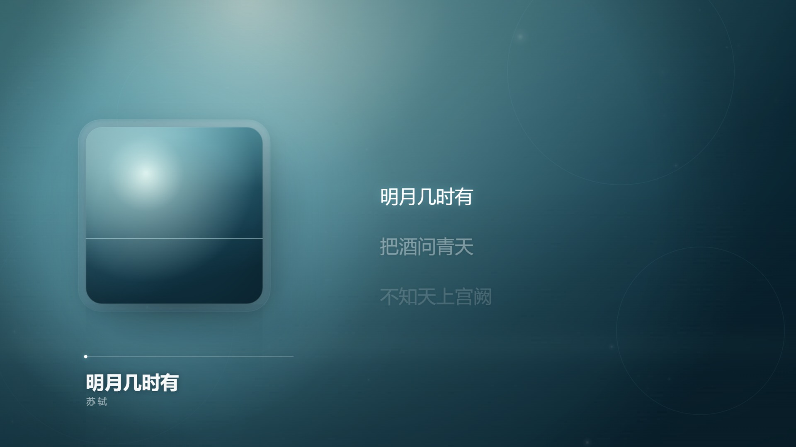

全程不联网
没有 CDN、没有接口、没有统计。断网、内网、飞机上都能用，音频不会离开你的电脑。
一张封面 + 一段音频 + 一份带时间轴的歌词，生成一条带唱片、歌词滚动、光影特效的 MV。 导出 720P / 1080P / 2K 的 MP4，横版竖版都行。
单文件，下载后双击即可离线使用。在线使用在部分网络下加载较慢（GitHub Pages），建议直接下载。

没有 CDN、没有接口、没有统计。断网、内网、飞机上都能用，音频不会离开你的电脑。
自己在浏览器里写 MP4 容器，不是录屏出 WebM 再改后缀。剪映、PR、微信、相册都认。
宋、楷、毛笔、行书、圆润，全部离线内嵌。LRC 的四种时间戳、五种编码都能吃。
1080P 10 秒片约 5 秒出片。另有「兼容录制」兜底，老设备也能出片。
横版 16:9 与竖版 9:16 是两套独立排版，不是简单旋转。
无水印、无次数限制、不用注册。代码和文档全在 GitHub。
[mm:ss.xx] 开头）。
没有时间戳的纯文本也能导入，但会按时间平均分配到整首歌，和实际演唱对不上。
| 项目 | 支持 |
|---|---|
| 容器 | MP4（H.264 + AAC，默认）· MOV（无 AAC 编码器时，H.264 + PCM） |
| 分辨率 | 720P · 1080P（默认）· 2K 2560×1440 |
| 画幅 | 横版 1920×1080 · 竖版 1080×1920 |
| 导出方式 | 快速编码（WebCodecs，约 2× 速）· 兼容录制（MediaRecorder，兼容性最好） |
| 歌词 | LRC / TXT；[mm:ss]、[mm:ss.xx]、[mm:ss.xxx]、[mm:ss:xx] |
| 音频 | MP3 · M4A · AAC · WAV · FLAC · OGG · Opus · WebM |
| 封面 | JPG · PNG · WebP · GIF · BMP · AVIF · SVG |
是。文件里没有任何 http(s) 外链、没有 fetch/XHR/WebSocket、没有统计脚本、没有 localStorage。你可以断网后再导出验证。
不需要。MP4 封装、WebM 解析、音频重采样全部是文件内的 JavaScript，一个依赖都没有。
说明这台设备的浏览器没有 AAC 音频编码器（部分国产内核会裁掉）。MP4 只认 AAC，所以自动改走 MOV（H.264 + 未压缩 PCM），有声音、剪映能导入。
不做 4K。浏览器 H.264 编码器在 4K 上帧率会掉到个位数，2K 是实测能稳的上限。
能。同一份文件，底栏两个页签左右滑动切换，默认 1080P，内存不够会自动降 720P 并说明原因。录制期间别切走、别锁屏。
代码 MIT。内置 5 款字体均为 SIL OFL 1.1（可商用、可嵌入），详见仓库的 NOTICE.md。你导入的音频/封面/歌词的版权由你自己负责。